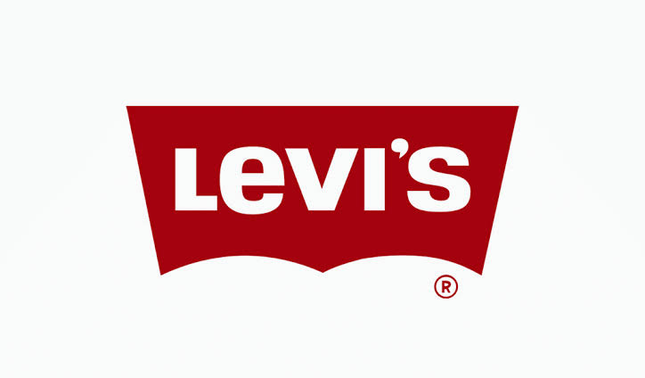
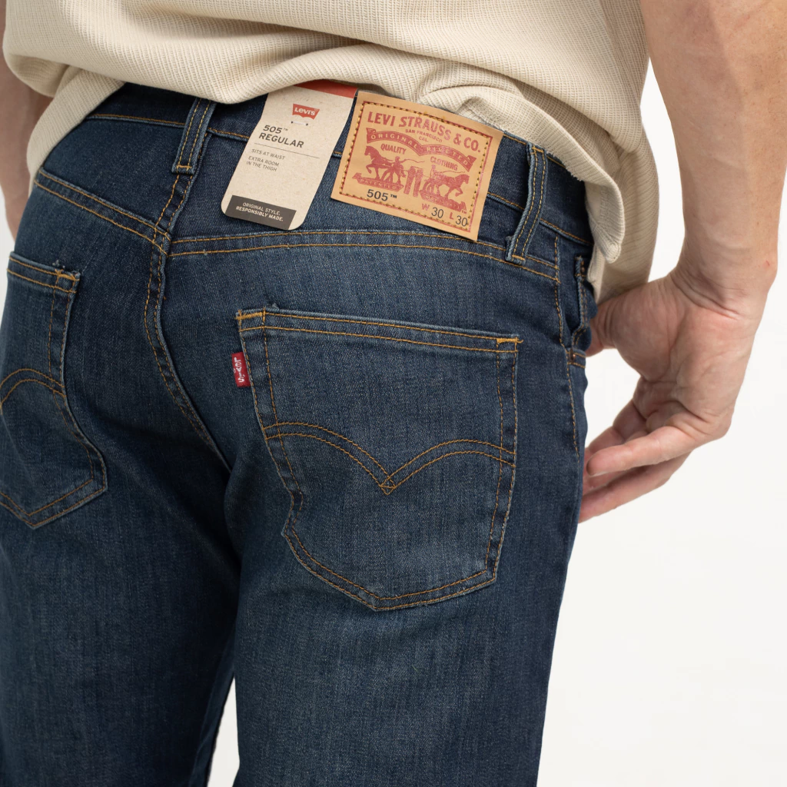
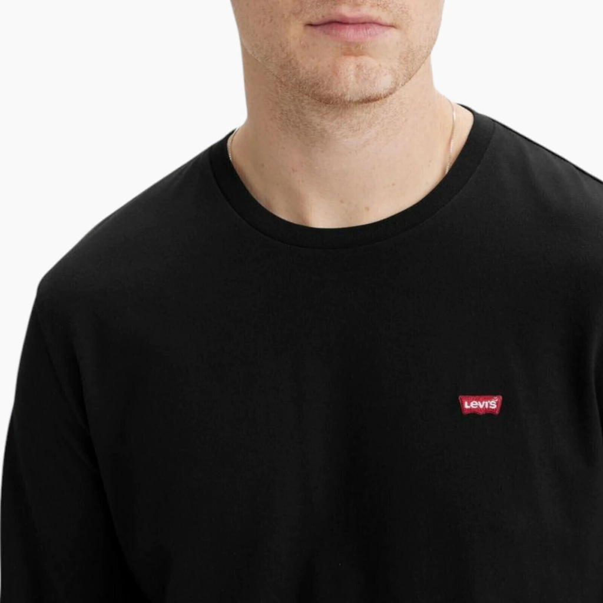
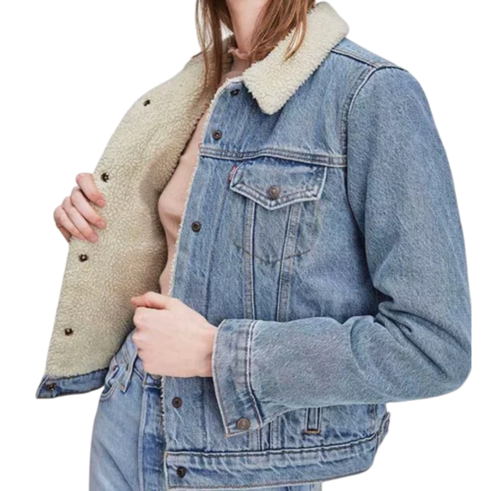
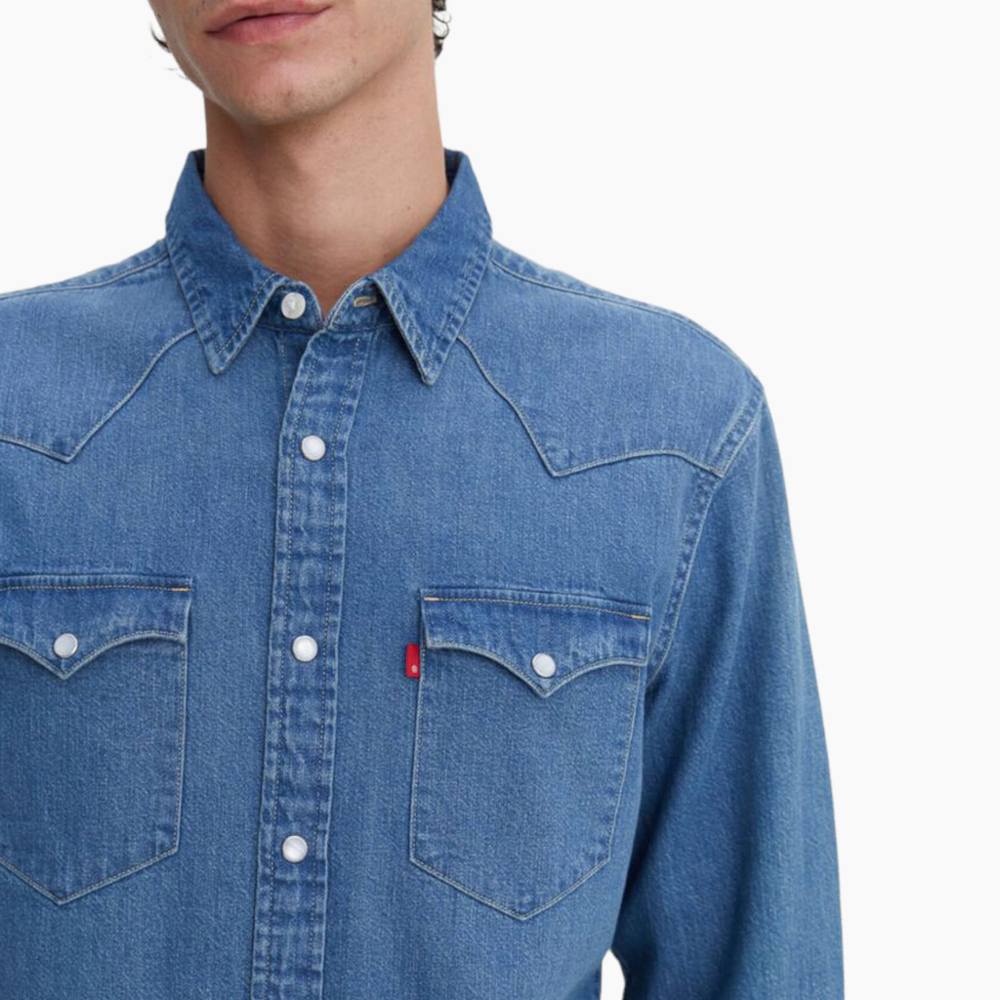

INICIO
¡NUEVO!
HOMBRE
MUJER
NIÑOS




En Levi's® reinventamos el denim sin perder nuestra esencia. Hoy, tus jeans favoritos combinan el diseño de siempre con las tecnologías del mañana.Descubrí prendas confeccionadas con algodón orgánico, TENCEL™ Lyocell y cáñamo algodonizado, un hilo revolucionario que ofrece la suavidad que amás pero consumiendo muchísima menos agua en su fabricación. Además, sumamos la flexibilidad justa de elastano en nuestras líneas stretch para que te muevas con total libertad.

En Levi's®, creemos que las prendas más simples deben ser las más extraordinarias. Por eso, reinventamos nuestras remeras icónicas combinando la comodidad que ya conocés con un compromiso firme hacia el futuro del diseño responsable.Cada una de nuestras remeras está confeccionada con jersey de algodón 100% premium, incluyendo líneas exclusivas de algodón orgánico cultivado sin pesticidas sintéticos y procesado con técnicas que reducen drásticamente el uso de agua. El resultado es un tejido ultra suave, altamente transpirable y diseñado para resistir el paso del tiempo y los lavados sin perder su forma ni su textura.

En Levi's®, diseñamos pensando en el paso del tiempo. Nuestra icónica Trucker Jacket no solo define el estilo urbano desde 1967, sino que hoy se reinventa combinando su resistencia legendaria con un compromiso absoluto hacia el diseño responsable.Cada campera está confeccionada sobre una base de algodón premium y fibras sustentables como el TENCEL™ Lyocell, un tejido de origen botánico increíblemente fuerte y suave. Al integrar procesos como la tecnología Water-Less® y materiales reciclados, logramos una prenda de calce perfecto que reduce el impacto ambiental. Es una campera robusta, auténtica y con carácter, pensada para ser usada por generaciones y lucir cada vez mejor con los años.

En Levi's®, transformamos una prenda esencial en una declaración de principios. Nuestras camisas combinan el auténtico legado del estilo americano con la innovación textil que el planeta necesita hoy.Cada camisa está confeccionada a partir de algodón de primera calidad y mezclas botánicas como el TENCEL™ Lyocell y el cáñamo algodonizado. Gracias a estas tecnologías sustentables, logramos tejidos más frescos, increíblemente suaves al tacto y de alta resistencia, utilizando una fracción del agua que requiere el calce convencional. Desde la estructura robusta de nuestra legendaria Western Shirt hasta las texturas livianas de temporada, te asegurás una prenda que mantiene su forma y sofisticación lavado tras lavado.
Días: Lunes a sábados
Horario: De 9:00 a 19:00 h
Teléfono y WhatsApp: +54 11 7078-0855
Correo electrónico: LevisArg@leuru.com.ar
Instagram: @levis_ar
Facebook: Levi's
YouTube: Levi's Argentina
Pagina creada con fines educativos - Mia Flint, 2026.